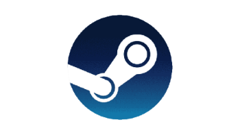

 Steam es una plataforma de distribución digital de videojuegos desarrollada por Valve Corporation.
Fue lanzada en septiembre de 2003 como una forma para Valve de proveer actualizaciones automáticas a sus juegos,pero finalmente se amplió para incluir juegos de terceros.
Steam ofrece protección contra piratería, servidores de emparejamiento, transmisiones de vídeo y servicios de redes sociales.
También proporciona al usuario la instalación y la actualización automática de juegos y características de comunidad como grupos y listas de amigos, guardado en la nube, voz en el juego y funcionalidad de chat.
Se utiliza tanto por pequeños desarrolladores independientes como grandes corporaciones de software para la distribución de videojuegos y material multimedia relacionado.
Para poder disfrutar de todos estos servicios, es necesario estar registrado en el servicio mediante la creación de una cuenta gratuita,
a la que se vinculan los videojuegos comprados por el jugador. Estos juegos pueden ser tanto los juegos que se ofrecen para la compra en la propia plataforma como ciertos juegos comprados en tiendas físicas.
La Steam Deck es una videoconsola portátil desarrollada por Valve Corporation. Su lanzamiento estuvo inicialmente programado para diciembre de 2021,
aunque posteriormente fue anunciado para febrero de 2022, debido a la falta de material para la producción.
La Steam Deck no viene con Windows instalado, y esto puede sonar a un gran problema.
Todos sabemos que el sistema operativo de Microsoft es lo mejor que hay para jugar, es indiscutible,
tanto por la compatibilidad de juegos como por el uso de API como DirectX.
En concreto, lo que tenemos en este equipo de Valve es una versión optimizada de SteamOS,
un sistema operativo basado en Arch Linux con el escritorio KDE Plasma.
Usar este SO nos permite disfrutar de toda la experiencia de Steam, de una manera altamente optimizada para la consola,
pero sigue habiendo una preocupación sobre la compatibilidad de juegos.
Afortunadamente, Valve tiene la solución: Proton.
Esta es una herramienta de compatibilidad que permite que muchos juegos de Windows sean compatibles con Linux,
sin necesidad de que los programadores hagan ninguna adaptación.
¿Y qué tal funciona Proton? Si hacemos caso a los datos de la web ProtonDB, vemos que hay información de 19.553 juegos,
de los cuales 15.991 funcionan en Linux, ya sea de forma nativa o con Proton.
Vamos, que la Steam Deck podrá, de serie, con el 82% de juegos de Steam.
Vemos arriba datos más concretos, donde “bronce o plata” significa que el juego tiene algunos problemas que afectan a la jugabilidad,
y “oro o más” significa que funciona perfectamente, necesitando en algún caso hacer ajustes.
Puedes consultar datos exactos de cada juego (y ajustes necesarios) en SteamDB.
(Es previsible que con el Deck vengan mejoras en Proton que amplíen esta compatibilidad, además de más adaptaciones de los desarrolladores. ¡Que no cunda el pánico!)